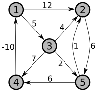

Perform the Floyd-Warshall algorithm on the weighted, directed graph below. Show the matrix D(k) that results for each iteration of the outer loop.

A bipartite graph is an undirected graph with vertex set V for which the vertices can be partitioned into two sets, L and V − L, such that every edge connects a vertex from L to a vertex in V − L. No edges are allowed between two vertices in L or two vertices in V − L. Consider the problem of finding a maximum bipartite subgraph: Given a general undirected graph G = (V, E), what is the largest subset of edges E′ ⊆ E such that G′ = (V, E′) is bipartite?
Restate this problem twice as an appropriate decision problem, once using “decision problem terminology” and once using “language terminology.”
For the maximum bipartite subgraph problem, show that finding the size of the maximum bipartite subgraph can be solved in polynomial time if and only if the decision problem can be solved in polynomial time.
A graph coloring of a graph G = (V, E) is a mapping c : V → ℤ (ℤ is the set of integers) such that c(u) ≠ c(v) for all (u, v) ∈ E (in other words, the endpoints of each edge must be different colors). We call this a k-coloring if the mapping only uses k integers (so the coloring could be given as a mapping c : V → {1, …, k}).
Let CHROMATIC-NUMBER denote the optimization problem (optimal value version) takes an undirected graph G as input, and outputs the minimum value k such that a k-coloring exists for graph G. We define the decision problem K-COLORABLE = {⟨G, k⟩ : G = (V, E) is an undirected graph, k ≥ 0 is an integer, and G is k-colorable}. Show that the optimal value problem CHROMATIC-NUMBER can be solved in polynomial time if and only if K-COLORABLE ∈ P.
Show that if K-COLORABLE ∈ P then a k-coloring (the assignment of colors to vertices) can be found for any k-colorable graph in polynomial time. (Hint: In class we showed how to find a Hamiltonian cycle in a graph by removing edges and repeatedly testing the graph. For this problem, try adding edges and repeatedly testing for k-colorability — what properties can you deduce from this process that will help you find a k-coloring?)
Prove that K-COLORABLE ∈ NP.
The security of several widely-used algorithms in cryptography depends on the difficulty of factoring, or finding the prime divisors of a large composite number. Specifically, if you had an algorithm that efficiently computed the prime factorization of integers, then you could break the RSA public-key encryption algorithm. We will try to turn this into a decision problem as follows (all numbers in this problem are given in binary):
SMALL-FACTOR = {⟨n, k⟩ : there exists a
non-trivial factor a ≤ k of n}
(a non-trivial factor is a factor that is ≥ 2).
Show that if SMALL-FACTOR ∈ P, then we can find all the prime factors of an integer n in polynomial time. What is the significance of this as far as the security of these encryption algorithms and the P vs. NP question?
Important Tip: remember that your algorithm must be polynomial in the length of the input, meaning the length of the binary representation of n. It can’t be polynomial in the value n.
Show that SMALL-FACTOR ∈ NP.
There’s a more direct decision problem that doesn’t bound the size of the factor:
COMPOSITE = {⟨n⟩ : n is a composite number}
Prove that COMPOSITE ∈ NP (this is almost identical to part b above – don’t over think it!).
Unlike SMALL-FACTOR, using a polynomial time algorithm for COMPOSITE to find a prime factorization in polynomial time is difficult and maybe impossible (if you could figure out a way to do this, it would be a major discovery in computer science!). Describe in one or two sentences why SMALL-FACTOR makes it easier (possible?) to find the actual factorization.